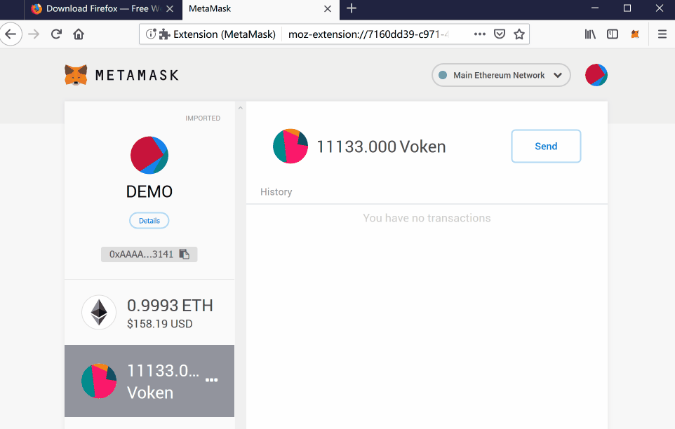

How to batch transfer ETH and Stoken?¶
In order to meet the actual needs of community promoters, we developed Batch transfer ETH and Stoken Contract. It allows you to easily transfer batches of ETH and Stoken in one transaction, will significantly reduce transfer costs and operating time.
This page will show you how to use this Batch transfer ETH and Stoken Contract with a practical example.
Transfer plan¶
Use a demo ETH wallet 0xAAAAfBd0C79865902828c34743AdE9c5a0373141
to transfer ETH and Stokens to the 10 addresses in this table:
Address |
Amount of ETH |
Amount of Stoken |
|---|---|---|
|
0.002 ETH |
1,001.000001 Stokens |
|
0.002 ETH |
1,001.000001 Stokens |
|
0.002 ETH |
1,001.000001 Stokens |
|
0.002 ETH |
1,001.000001 Stokens |
|
0.002 ETH |
1,001.000001 Stokens |
|
0.002 ETH |
1,001.000001 Stokens |
|
0.002 ETH |
1,001.000001 Stokens |
|
0.002 ETH |
1,001.000001 Stokens |
|
0.002 ETH |
1,001.000001 Stokens |
|
0.002 ETH |
1,001.000001 Stokens |
Under normal conditions, 20 transfer operations are required. With the help of the contract, 20 transfers can be completed in one operation.
Tools preparing¶
Plan A
 Google Chrome (Browser) +
Google Chrome (Browser) +  MetaMask (extension)
MetaMask (extension)
Plan B
 FireFox (Browser) + MetaMask (extension)
FireFox (Browser) + MetaMask (extension)
Here is a guide: ETH wallet: MetaMask on PC
Batch transfer with help of the contract¶
1. Approve¶
Approve the Batch transfer ETH and Stoken Contract to transfer Stokens from your wallet.
Code rules: For security reasons, only you and use your own wallet to transfer ETH and Stokens is allowed.
According to the table data in the example at the beginning of this page. There are 1,001.000001 x10 = 10,010.00001 Stokens will be transferred to 10 different addresses. That means you need to have a Stoken balance greater than this number in your wallet and then perform the approval.
{kind=link}
Use the Ethereum browser etherscan.io - Write Contract, interact with Stoken Main Contract (Deprecated in Aug 2019) which address is 0x460cbb9409a024a55f2b7b7f69afd0da385ce850.
Copy and paste the URL into the target blank and visit it:
https://etherscan.io/address/0x82070415fee803f94ce5617be1878503e58f0a6a#writeContractConnect with MetaMask, and confirm.
Find the 1st function
1. approve,Fill the Batch transfer ETH and Stoken Contract address
0xf5ed657f9441672788A4935F279956745edf461Binto the spender blank, then enter the value of Stoken (with 6 decimal digits), for example 10010.000010 Stoken is10010000010.Start to write into the contract, perform the approval. Confirm the transaction.
There is a button
View your transactionappears, click it to check the status. When it showsSuccess, DONE.
You have successfully approval the Batch transfer ETH and Stoken Contract for 10010.000010 Stoken,
then you can call the contract to do your batch transfer.

If you want to check the approval manually,
read the contract, through the 13. allowance,
you can verify that is exactly what you want.
2. Batch Transfer¶
Batch transfer ETH and Stokens to 10 different addresses, 0.002 ETH and 1,001.000001 Stoken for each.
Make sure you have a balance of ETH greater than 0.002 x10 = 0.02 ETH, and already perform a approval of 10010.000010 Stokens in the previous step.
Copy and paste the URL into the target blank and visit it:
https://etherscan.io/address/0xf5ed657f9441672788a4935f279956745edf461b#writeContractConnect with MetaMask, and confirm.
Find the 1st function
1. batchTransfer,Fill the first blank
batchTransferwith ETH amount, the unit isETH, in this example it is 0.002 x10 = 0.02 ETH, so fill with0.02.The second blank
accounts, fill with the address, separated by commas,, no commas,ending after the last one.The third blank
etherValue, fill it with the ETH value in wei, (1 wei = 0.000000000000000001 ETH), so, 0.002 ETH is2000000000000000here.The last blank
stokenValue, fill it with the number of stokens to be transferred per address, the last six digits is decimal positions, so, 1001.000001 Stoken is1001000001here.Start to write into the contract, Confirm the transaction.
There is a button
View your transactionappears, click it to check the status. When it showsSuccess, DONE.
{kind=link}
There are 10 transactions of ETH, and 10 transactions of Stoken, finished at one time. Both transactions fee and operating time, are greatly reduced.
That’s all, 2 steps:
Approve
Batch Transfer